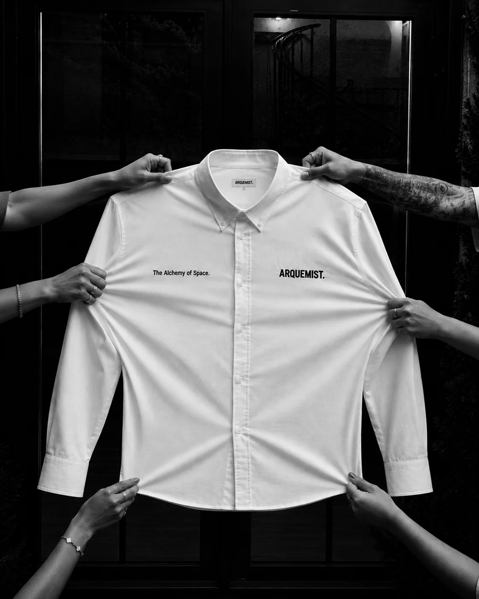

Studio
About us
ARQUEMIST. is an architecture and design studio born from a conviction: spaces have the power to transform the way we live, feel and relate to the world.
We understand architecture as an encounter between art, technique and human sensitivity. A process of exploration in which ideas become matter, needs become possibilities, and spaces become experiences.
We do not believe in an architecture limited to the construction of buildings. We believe in an architecture that questions, that experiments, that engages in dialogue with its surroundings and finds beauty even in the everyday.
Each project is an opportunity to reinterpret what already exists, to discover new possibilities and to create something that transcends its function.
We are ARQUEMIST. We transform ideas into spaces, and spaces into experiences.
Identity
-

-

-

-

Mission
To transform space through architecture, design and creativity, developing projects that balance artistic sensitivity, functionality and social responsibility.
We seek to deeply understand people, their needs and their surroundings in order to conceive spaces with identity — spaces capable of evoking emotions, improving everyday life and generating a positive impact on society.
We believe that every project, regardless of its scale, is an opportunity to create value, awaken new perspectives and show that architecture can be much more than building.
Vision
To establish ourselves as an architecture and design studio recognized for its creative identity, its capacity for innovation and its commitment to people.
We aspire to go beyond the boundaries of conventional architecture, exploring new forms of expression through art, design, research and experimentation.
Our vision is to build an architectural practice with national and international reach, where every project helps transform its surroundings, enrich the human experience and leave a meaningful mark on society.
We want ARQUEMIST. to be more than a studio: a way of understanding, questioning and transforming the world through space.
Our philosophy
Architecture is the art of transformation.
Not only of materials into buildings, but of ideas into experiences, needs into opportunities, and spaces into places that take on meaning.
We believe that the true value of architecture lies not only in what we build, but in what we are able to evoke through it.
Our pillars
-
01
Creativity without formulas
Every project deserves its own answer. We do not design from repeated solutions, but from ideas born of understanding and questioning.
-
02
Human architecture
We put people at the center of design. Architecture must serve, move, include and improve lives.
-
03
Art and experimentation
We explore materials, forms, concepts and disciplines to discover new possibilities of expression.
-
04
Rigor and materialization
A good idea must also be buildable. We combine creative vision, technical knowledge and attention to detail.
-
05
Commitment to our surroundings
We understand architecture as a social and environmental responsibility. We seek to generate an impact that transcends each project.

Architecture + alchemy = ARQUEMIST.
Why ARQUEMIST.?
ARQUEMIST. is born from the union of two concepts: architecture and alchemy.
Since ancient times, alchemy has represented the pursuit of transformation: the desire to turn ordinary matter into something extraordinary.
We find in that philosophy an analogy for the way we understand architecture.
Just as the alchemist studies, experiments and transforms matter, the architect interprets needs, explores the possibilities of space and turns ideas into tangible realities.
For us, every project is an alchemical process in which art, science, technique and human sensitivity converge to give rise to something new.
We do not seek to turn lead into gold, but to transform spaces into experiences, materials into emotions, and ideas into places with meaning.
That is where our name comes from: from the conviction that the true richness of architecture lies not only in what we build, but in what we manage to transform.